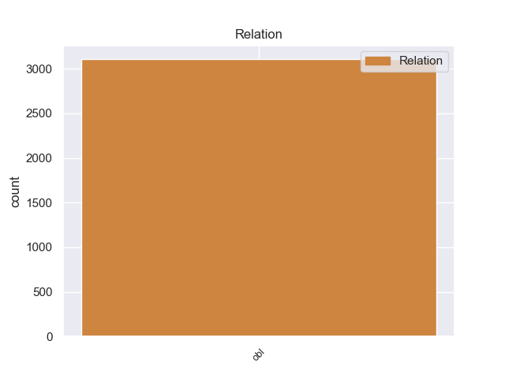
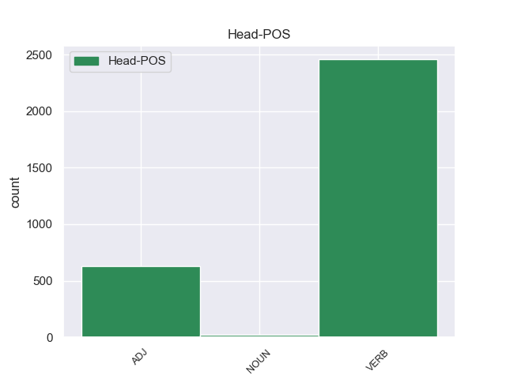
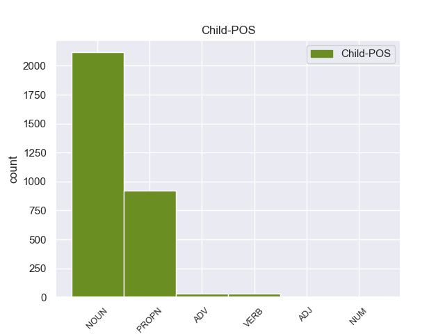

Distribution of features within this leaf



Agreement Rules sorted by frequency.
- When the dependent token is the oblique nominal(obl) of the head token, and the head token is VERB and the dependent token is NOUN.
1 हमें _ _ _ _ 0 _ _ _
2 लोगों लोग NOUN NN Case=Acc|Gender=Masc|Number=Plur|Person=3 6 obl _ ChunkId=NP2|ChunkType=head|Tam=0|Translit=logoṁ|Vib=0_तक
3 तक _ _ _ _ 0 _ _ _
4 गांधीवादी _ _ _ _ 0 _ _ _
5 संदेश _ _ _ _ 0 _ _ _
6 पहुंचाने पहुंचा VERB VM Case=Acc|Number=Sing|VerbForm=Inf 0 _ _ _
7 का _ _ _ _ 0 _ _ _
8 मौका _ _ _ _ 0 _ _ _
9 मिला _ _ _ _ 0 _ _ _
10 । _ _ _ _ 0 _ _ _
1 पत्रिका _ _ _ _ 0 _ _ _
2 के _ _ _ _ 0 _ _ _
3 अनुसार _ _ _ _ 0 _ _ _
4 अमेरिका अमेरिका PROPN NNP Case=Acc|Gender=Masc|Number=Sing|Person=3 15 obl _ ChunkId=NP2|ChunkType=head|Tam=0|Translit=amerikā|Vib=0_का_ओर_से
5 की _ _ _ _ 0 _ _ _
6 ओर _ _ _ _ 0 _ _ _
7 से _ _ _ _ 0 _ _ _
8 परमाणु _ _ _ _ 0 _ _ _
9 बाजार _ _ _ _ 0 _ _ _
10 के _ _ _ _ 0 _ _ _
11 इस _ _ _ _ 0 _ _ _
12 घोटाले _ _ _ _ 0 _ _ _
13 को _ _ _ _ 0 _ _ _
14 उजागर _ _ _ _ 0 _ _ _
15 करने कर VERB VM Case=Acc|VerbForm=Inf 0 _ _ _
16 में _ _ _ _ 0 _ _ _
17 रूचि _ _ _ _ 0 _ _ _
18 रखने _ _ _ _ 0 _ _ _
19 के _ _ _ _ 0 _ _ _
20 बावजूद _ _ _ _ 0 _ _ _
21 अमेरिका _ _ _ _ 0 _ _ _
22 और _ _ _ _ 0 _ _ _
23 आईएईए _ _ _ _ 0 _ _ _
24 को _ _ _ _ 0 _ _ _
25 खान _ _ _ _ 0 _ _ _
26 से _ _ _ _ 0 _ _ _
27 सीधे _ _ _ _ 0 _ _ _
28 पूछताछ _ _ _ _ 0 _ _ _
29 करने _ _ _ _ 0 _ _ _
30 की _ _ _ _ 0 _ _ _
31 अनुमति _ _ _ _ 0 _ _ _
32 नहीं _ _ _ _ 0 _ _ _
33 दी _ _ _ _ 0 _ _ _
34 गई _ _ _ _ 0 _ _ _
35 । _ _ _ _ 0 _ _ _
1 चीनी _ _ _ _ 0 _ _ _
2 प्रधानमंत्री _ _ _ _ 0 _ _ _
3 वेन _ _ _ _ 0 _ _ _
4 जियाबाओ _ _ _ _ 0 _ _ _
5 की _ _ _ _ 0 _ _ _
6 भारत _ _ _ _ 0 _ _ _
7 यात्रा यात्रा NOUN NN Case=Acc|Gender=Fem|Number=Sing|Person=3 22 obl _ ChunkId=NP2|ChunkType=head|Tam=0|Translit=yātrā|Vib=0_से_पहले
8 से _ _ _ _ 0 _ _ _
9 पहले _ _ _ _ 0 _ _ _
10 निर्वासित _ _ _ _ 0 _ _ _
11 तिब्बती _ _ _ _ 0 _ _ _
12 आध्यात्मिक _ _ _ _ 0 _ _ _
13 नेता _ _ _ _ 0 _ _ _
14 दलाई _ _ _ _ 0 _ _ _
15 लामा _ _ _ _ 0 _ _ _
16 ने _ _ _ _ 0 _ _ _
17 कहा _ _ _ _ 0 _ _ _
18 है _ _ _ _ 0 _ _ _
19 कि _ _ _ _ 0 _ _ _
20 चीनी _ _ _ _ 0 _ _ _
21 और _ _ _ _ 0 _ _ _
22 तिब्बती तिब्बती ADJ JJ Case=Acc 0 _ _ _
23 एक _ _ _ _ 0 _ _ _
24 - _ _ _ _ 0 _ _ _
25 दूसरे _ _ _ _ 0 _ _ _
26 की _ _ _ _ 0 _ _ _
27 सांस्कृतिक _ _ _ _ 0 _ _ _
28 विशिष्टता _ _ _ _ 0 _ _ _
29 का _ _ _ _ 0 _ _ _
30 आदर _ _ _ _ 0 _ _ _
31 करते _ _ _ _ 0 _ _ _
32 हैं _ _ _ _ 0 _ _ _
33 । _ _ _ _ 0 _ _ _
1 अंबानी _ _ _ _ 0 _ _ _
2 बंधुओं _ _ _ _ 0 _ _ _
3 के _ _ _ _ 0 _ _ _
4 बीच _ _ _ _ 0 _ _ _
5 छिड़ी _ _ _ _ 0 _ _ _
6 कॉरपोरेट _ _ _ _ 0 _ _ _
7 जंग _ _ _ _ 0 _ _ _
8 के _ _ _ _ 0 _ _ _
9 बाद _ _ _ _ 0 _ _ _
10 अब _ _ _ _ 0 _ _ _
11 लंदन लंदन PROPN NNP Case=Nom|Gender=Masc|Number=Sing|Person=3 12 obl _ ChunkId=NP4|ChunkType=head|Tam=0|Translit=laṁdana|Vib=0
12 स्थित स्थित ADJ JJ Case=Nom 0 _ _ _
13 स्टील _ _ _ _ 0 _ _ _
14 महारथी _ _ _ _ 0 _ _ _
15 लक्ष्मी _ _ _ _ 0 _ _ _
16 मित्तल _ _ _ _ 0 _ _ _
17 और _ _ _ _ 0 _ _ _
18 उनके _ _ _ _ 0 _ _ _
19 भाई _ _ _ _ 0 _ _ _
20 प्रमोद _ _ _ _ 0 _ _ _
21 मित्तल _ _ _ _ 0 _ _ _
22 के _ _ _ _ 0 _ _ _
23 बीच _ _ _ _ 0 _ _ _
24 पश्चिम _ _ _ _ 0 _ _ _
25 अफ्रीका _ _ _ _ 0 _ _ _
26 में _ _ _ _ 0 _ _ _
27 लौह _ _ _ _ 0 _ _ _
28 अयस्क _ _ _ _ 0 _ _ _
29 उद्योग _ _ _ _ 0 _ _ _
30 को _ _ _ _ 0 _ _ _
31 लेकर _ _ _ _ 0 _ _ _
32 अप्रत्यक्ष _ _ _ _ 0 _ _ _
33 रूप _ _ _ _ 0 _ _ _
34 से _ _ _ _ 0 _ _ _
35 विवाद _ _ _ _ 0 _ _ _
36 शुरू _ _ _ _ 0 _ _ _
37 हो _ _ _ _ 0 _ _ _
38 गया _ _ _ _ 0 _ _ _
39 है _ _ _ _ 0 _ _ _
40 । _ _ _ _ 0 _ _ _
1 पत्रिका _ _ _ _ 0 _ _ _
2 के _ _ _ _ 0 _ _ _
3 अनुसार _ _ _ _ 0 _ _ _
4 अमेरिका _ _ _ _ 0 _ _ _
5 की _ _ _ _ 0 _ _ _
6 ओर _ _ _ _ 0 _ _ _
7 से _ _ _ _ 0 _ _ _
8 परमाणु _ _ _ _ 0 _ _ _
9 बाजार _ _ _ _ 0 _ _ _
10 के _ _ _ _ 0 _ _ _
11 इस _ _ _ _ 0 _ _ _
12 घोटाले _ _ _ _ 0 _ _ _
13 को _ _ _ _ 0 _ _ _
14 उजागर _ _ _ _ 0 _ _ _
15 करने कर VERB VM Case=Acc|VerbForm=Inf 18 obl _ ChunkId=VGNN|ChunkType=head|Tam=nA|Translit=karane|Vib=ना_में
16 में _ _ _ _ 0 _ _ _
17 रूचि _ _ _ _ 0 _ _ _
18 रखने रख VERB VM Case=Acc|VerbForm=Inf 0 _ _ _
19 के _ _ _ _ 0 _ _ _
20 बावजूद _ _ _ _ 0 _ _ _
21 अमेरिका _ _ _ _ 0 _ _ _
22 और _ _ _ _ 0 _ _ _
23 आईएईए _ _ _ _ 0 _ _ _
24 को _ _ _ _ 0 _ _ _
25 खान _ _ _ _ 0 _ _ _
26 से _ _ _ _ 0 _ _ _
27 सीधे _ _ _ _ 0 _ _ _
28 पूछताछ _ _ _ _ 0 _ _ _
29 करने _ _ _ _ 0 _ _ _
30 की _ _ _ _ 0 _ _ _
31 अनुमति _ _ _ _ 0 _ _ _
32 नहीं _ _ _ _ 0 _ _ _
33 दी _ _ _ _ 0 _ _ _
34 गई _ _ _ _ 0 _ _ _
35 । _ _ _ _ 0 _ _ _
1 दूसरी _ _ _ _ 0 _ _ _
2 ओर _ _ _ _ 0 _ _ _
3 खुफिया _ _ _ _ 0 _ _ _
4 सूत्रों _ _ _ _ 0 _ _ _
5 का _ _ _ _ 0 _ _ _
6 यह _ _ _ _ 0 _ _ _
7 भी _ _ _ _ 0 _ _ _
8 दावा _ _ _ _ 0 _ _ _
9 है _ _ _ _ 0 _ _ _
10 कि _ _ _ _ 0 _ _ _
11 बम _ _ _ _ 0 _ _ _
12 ब्लास्ट _ _ _ _ 0 _ _ _
13 की _ _ _ _ 0 _ _ _
14 साजिश _ _ _ _ 0 _ _ _
15 के _ _ _ _ 0 _ _ _
16 पीछे _ _ _ _ 0 _ _ _
17 पूरी _ _ _ _ 0 _ _ _
18 तरह तरह NOUN NN Case=Nom|Gender=Fem|Number=Sing|Person=3 21 obl _ ChunkId=NP7|ChunkType=head|Tam=0|Translit=taraha|Vib=0
19 आईएसआई _ _ _ _ 0 _ _ _
20 का _ _ _ _ 0 _ _ _
21 दिमाग दिमाग NOUN NN Case=Nom|Gender=Masc|Number=Sing|Person=3 0 _ _ _
22 है _ _ _ _ 0 _ _ _
23 । _ _ _ _ 0 _ _ _
1 इसीलिए _ _ _ _ 0 _ _ _
2 सभी _ _ _ _ 0 _ _ _
3 मुद्दों _ _ _ _ 0 _ _ _
4 को _ _ _ _ 0 _ _ _
5 रफा _ _ _ _ 0 _ _ _
6 - _ _ _ _ 0 _ _ _
7 दफा _ _ _ _ 0 _ _ _
8 करने _ _ _ _ 0 _ _ _
9 के _ _ _ _ 0 _ _ _
10 लिए _ _ _ _ 0 _ _ _
11 नक़वी _ _ _ _ 0 _ _ _
12 आडवाणी _ _ _ _ 0 _ _ _
13 से _ _ _ _ 0 _ _ _
14 आमने _ _ _ _ 0 _ _ _
15 - _ _ _ _ 0 _ _ _
16 सामने सामने ADV NST AdpType=Post|Case=Nom|Gender=Masc|Number=Sing|Person=3 17 obl _ AltTag=ADV-NOUN|ChunkId=NP6|ChunkType=head|Translit=sāmane
17 मिलना मिल VERB VM Case=Nom|VerbForm=Inf 0 _ _ _
18 चाहते _ _ _ _ 0 _ _ _
19 थे _ _ _ _ 0 _ _ _
20 । _ _ _ _ 0 _ _ _
1 उनके _ _ _ _ 0 _ _ _
2 नेतृत्व _ _ _ _ 0 _ _ _
3 में _ _ _ _ 0 _ _ _
4 भारत _ _ _ _ 0 _ _ _
5 ने _ _ _ _ 0 _ _ _
6 श्रीलंका _ _ _ _ 0 _ _ _
7 को _ _ _ _ 0 _ _ _
8 टेस्ट _ _ _ _ 0 _ _ _
9 सिरीज़ _ _ _ _ 0 _ _ _
10 में _ _ _ _ 0 _ _ _
11 २ _ _ _ _ 0 _ _ _
12 - _ _ _ _ 0 _ _ _
13 ० ० NUM QC Case=Acc|NumType=Card 15 obl _ ChunkId=NP6|ChunkType=head|Translit=0|Vib=0_से
14 से _ _ _ _ 0 _ _ _
15 हराने हरा VERB VM Case=Acc|VerbForm=Inf 0 _ _ _
16 के _ _ _ _ 0 _ _ _
17 अलावा _ _ _ _ 0 _ _ _
18 वनडे _ _ _ _ 0 _ _ _
19 मैचों _ _ _ _ 0 _ _ _
20 की _ _ _ _ 0 _ _ _
21 श्रृंखला _ _ _ _ 0 _ _ _
22 ६ _ _ _ _ 0 _ _ _
23 - _ _ _ _ 0 _ _ _
24 १ _ _ _ _ 0 _ _ _
25 से _ _ _ _ 0 _ _ _
26 जीती _ _ _ _ 0 _ _ _
27 थी _ _ _ _ 0 _ _ _
28 । _ _ _ _ 0 _ _ _
1 इससे _ _ _ _ 0 _ _ _
2 पहले _ _ _ _ 0 _ _ _
3 लोकसभा _ _ _ _ 0 _ _ _
4 में _ _ _ _ 0 _ _ _
5 हरियाणा हरियाणा PROPN NNP Case=Acc|Gender=Masc|Number=Sing|Person=3 8 obl _ ChunkId=NP3|ChunkType=head|Tam=0|Translit=hariyāṇā|Vib=0_से
6 से _ _ _ _ 0 _ _ _
7 नवनिर्वाचित _ _ _ _ 0 _ _ _
8 सांसद सांसद NOUN NN Case=Acc|Gender=Masc|Number=Sing|Person=3 0 _ _ _
9 दिपेंद्र _ _ _ _ 0 _ _ _
10 सिंह _ _ _ _ 0 _ _ _
11 हुड्डा _ _ _ _ 0 _ _ _
12 और _ _ _ _ 0 _ _ _
13 पश्चिम _ _ _ _ 0 _ _ _
14 बंगाल _ _ _ _ 0 _ _ _
15 से _ _ _ _ 0 _ _ _
16 निर्वाचित _ _ _ _ 0 _ _ _
17 बंगश _ _ _ _ 0 _ _ _
18 गोपाल _ _ _ _ 0 _ _ _
19 चौधरी _ _ _ _ 0 _ _ _
20 को _ _ _ _ 0 _ _ _
21 शपथ _ _ _ _ 0 _ _ _
22 दिलाई _ _ _ _ 0 _ _ _
23 गई _ _ _ _ 0 _ _ _
24 । _ _ _ _ 0 _ _ _
1 आरएसएस _ _ _ _ 0 _ _ _
2 की _ _ _ _ 0 _ _ _
3 विचारधारा _ _ _ _ 0 _ _ _
4 में _ _ _ _ 0 _ _ _
5 यह _ _ _ _ 0 _ _ _
6 क्रांतिकारी _ _ _ _ 0 _ _ _
7 परिवर्तन _ _ _ _ 0 _ _ _
8 ऐसे _ _ _ _ 0 _ _ _
9 समय _ _ _ _ 0 _ _ _
10 में _ _ _ _ 0 _ _ _
11 हुआ _ _ _ _ 0 _ _ _
12 है _ _ _ _ 0 _ _ _
13 जब _ _ _ _ 0 _ _ _
14 वह _ _ _ _ 0 _ _ _
15 अपने _ _ _ _ 0 _ _ _
16 राजनीतिक _ _ _ _ 0 _ _ _
17 संगठन _ _ _ _ 0 _ _ _
18 भाजपा _ _ _ _ 0 _ _ _
19 को _ _ _ _ 0 _ _ _
20 वापस वापस ADJ JJ Case=Acc 25 obl _ ChunkId=JJP|ChunkType=head|Translit=vāpasa
21 हिन्दूवादी _ _ _ _ 0 _ _ _
22 एजेंडे _ _ _ _ 0 _ _ _
23 की _ _ _ _ 0 _ _ _
24 तरफ _ _ _ _ 0 _ _ _
25 लाने ला VERB VM Case=Acc|VerbForm=Inf 0 _ _ _
26 के _ _ _ _ 0 _ _ _
27 लिए _ _ _ _ 0 _ _ _
28 जी _ _ _ _ 0 _ _ _
29 - _ _ _ _ 0 _ _ _
30 तोड़ _ _ _ _ 0 _ _ _
31 कोशिश _ _ _ _ 0 _ _ _
32 कर _ _ _ _ 0 _ _ _
33 रहा _ _ _ _ 0 _ _ _
34 है _ _ _ _ 0 _ _ _
35 । _ _ _ _ 0 _ _ _
Disagree Examples:
1 मुख्य _ _ _ _ 0 _ _ _
2 रूप रूप NOUN NN Case=Acc|Gender=Masc|Number=Sing|Person=3 11 obl _ ChunkId=NP|ChunkType=head|Tam=0|Translit=rūpa|Vib=0_से
3 से _ _ _ _ 0 _ _ _
4 यह _ _ _ _ 0 _ _ _
5 प्रदर्शन _ _ _ _ 0 _ _ _
6 कला _ _ _ _ 0 _ _ _
7 और _ _ _ _ 0 _ _ _
8 दृश्य _ _ _ _ 0 _ _ _
9 कला _ _ _ _ 0 _ _ _
10 का _ _ _ _ 0 _ _ _
11 केंद्र केंद्र NOUN NN Case=Nom|Gender=Masc|Number=Sing|Person=3 0 _ _ _
12 है _ _ _ _ 0 _ _ _
13 । _ _ _ _ 0 _ _ _
1 यह _ _ _ _ 0 _ _ _
2 मूल _ _ _ _ 0 _ _ _
3 रूप रूप NOUN NN Case=Acc|Gender=Masc|Number=Sing|Person=3 6 obl _ ChunkId=NP2|ChunkType=head|Tam=0|Translit=rūpa|Vib=0_से
4 से _ _ _ _ 0 _ _ _
5 विज्ञान _ _ _ _ 0 _ _ _
6 संग्रहालय संग्रहालय NOUN NN Case=Nom|Gender=Masc|Number=Sing|Person=3 0 _ _ _
7 है _ _ _ _ 0 _ _ _
8 जो _ _ _ _ 0 _ _ _
9 श्यामला _ _ _ _ 0 _ _ _
10 हिल्स _ _ _ _ 0 _ _ _
11 की _ _ _ _ 0 _ _ _
12 खूबसूरती _ _ _ _ 0 _ _ _
13 के _ _ _ _ 0 _ _ _
14 बीच _ _ _ _ 0 _ _ _
15 स्थित _ _ _ _ 0 _ _ _
16 है _ _ _ _ 0 _ _ _
17 । _ _ _ _ 0 _ _ _
1 शहर शहर NOUN NN Case=Acc|Gender=Masc|Number=Sing|Person=3 4 obl _ ChunkId=NP|ChunkType=head|Tam=0|Translit=śahara|Vib=0_के_बीच
2 के _ _ _ _ 0 _ _ _
3 बीच _ _ _ _ 0 _ _ _
4 स्थित स्थित ADJ JJ Case=Nom 0 _ _ _
5 चौक _ _ _ _ 0 _ _ _
6 में _ _ _ _ 0 _ _ _
7 पुरानी _ _ _ _ 0 _ _ _
8 मस्जिद _ _ _ _ 0 _ _ _
9 , _ _ _ _ 0 _ _ _
10 हवेलियाँ _ _ _ _ 0 _ _ _
11 अतीत _ _ _ _ 0 _ _ _
12 की _ _ _ _ 0 _ _ _
13 स्मृति _ _ _ _ 0 _ _ _
14 दिलाते _ _ _ _ 0 _ _ _
15 हैं _ _ _ _ 0 _ _ _
16 । _ _ _ _ 0 _ _ _
1 सँकरी _ _ _ _ 0 _ _ _
2 गलियों गली NOUN NN Case=Acc|Gender=Fem|Number=Plur|Person=3 4 obl _ ChunkId=NP|ChunkType=head|Tam=0|Translit=galiyoṁ|Vib=0_में
3 में _ _ _ _ 0 _ _ _
4 स्थित स्थित ADJ JJ Case=Nom 0 _ _ _
5 दुकानें _ _ _ _ 0 _ _ _
6 हैं _ _ _ _ 0 _ _ _
7 जिनमें _ _ _ _ 0 _ _ _
8 शिल्प _ _ _ _ 0 _ _ _
9 के _ _ _ _ 0 _ _ _
10 खजाने _ _ _ _ 0 _ _ _
11 खुले _ _ _ _ 0 _ _ _
12 हुए _ _ _ _ 0 _ _ _
13 हैं _ _ _ _ 0 _ _ _
14 । _ _ _ _ 0 _ _ _
1 मुंबई _ _ _ _ 0 _ _ _
2 से _ _ _ _ 0 _ _ _
3 इटारसी _ _ _ _ 0 _ _ _
4 और _ _ _ _ 0 _ _ _
5 झाँसी _ _ _ _ 0 _ _ _
6 के _ _ _ _ 0 _ _ _
7 रास्ते _ _ _ _ 0 _ _ _
8 दिल्ली दिल्ली PROPN NNP Case=Nom|Gender=Fem|Number=Sing|Person=3 9 obl _ ChunkId=NP5|ChunkType=head|Tam=0|Translit=dillī|Vib=0
9 जाने जा VERB VM Case=Acc|Number=Plur|VerbForm=Inf 0 _ _ _
10 वाली _ _ _ _ 0 _ _ _
11 मुख्य _ _ _ _ 0 _ _ _
12 गाड़ियाँ _ _ _ _ 0 _ _ _
13 भोपाल _ _ _ _ 0 _ _ _
14 होकर _ _ _ _ 0 _ _ _
15 जाती _ _ _ _ 0 _ _ _
16 हैं _ _ _ _ 0 _ _ _
17 । _ _ _ _ 0 _ _ _